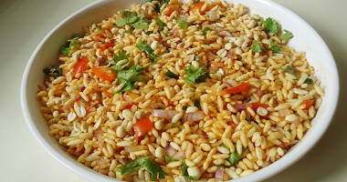

Brinjal fry recipe | Andhra style vankaya fry recipe | Simple...
Bisi bele bath recipe | Karnataka style bisibelebath |...
Indian Rice Recipes - 110 Easy rice dishes for quick lunch & dinner
Akki roti recipe | Karnataka akki rotti recipe | Rice flour roti...

Churumuri recipe | How to make churumuri | Spiced puffed rice recipe
Carrot rice recipe | How to make carrot rice recipe | Rice recipes
Tomato bath recipe | How to make tomato rice bath recipe
Bisi bele bath powder recipe | Bisi bele bath masala recipe
AdChoices